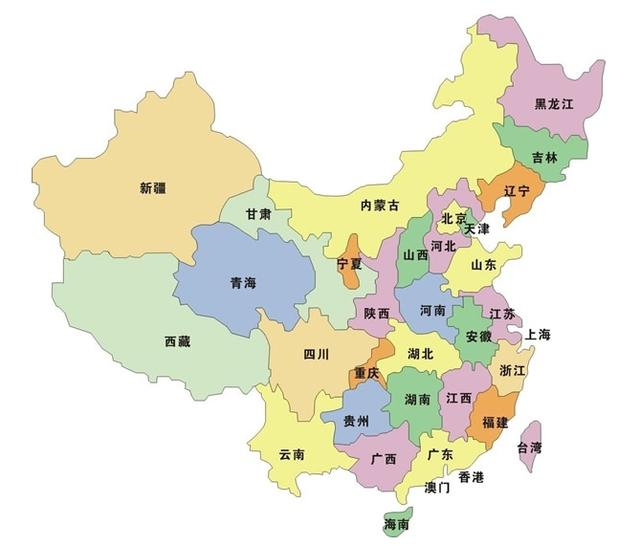
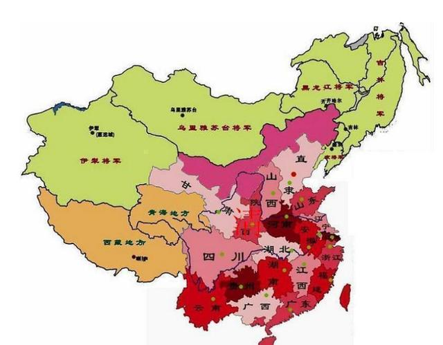
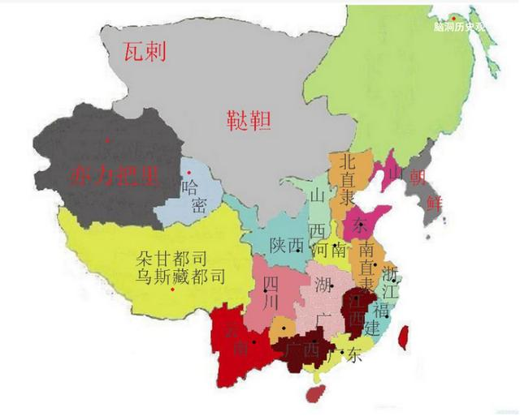
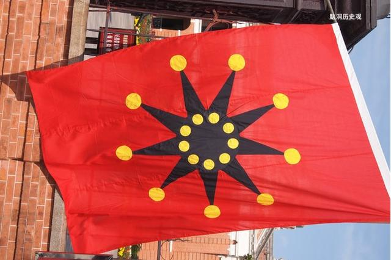
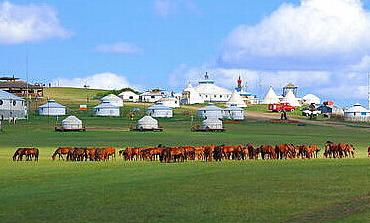

清亡时只有22个省，现在却有三十多个省级单位，谁是多出来的？
脑洞历史观2016-08-29 21:24
亲们知道，中国现在有23个省、5个自治区、4个直辖市、2个特别行政区。

但在清朝一开始，只有十八个省和一个特别地区，就是清末，也只有22个省。那么，哪些省是多出来的呢？

我们先聊一下清朝，清朝的行政区划，基本是继承明朝的。而明朝的制度，其实是继承元朝的。
在元朝，有一个行省，就是现在我们说的省。到了明朝，称承宣布政使司，其实也就是省的意思，在明朝时，有十三个布政使跟两个直隶。

直隶大家知道了，北直隶是北京，南直隶就是南京。是为“两京十三省”。
清朝就把这十五个地方进行了一些调整。比如把湖广分为湖南、湖北。南直隶改为江南省，后来又分为安徽、江苏，又从陕西分出了甘肃。这样就形成了十八省，这也称为内地十八省。

到了清末的时候，有一些见识比较浅的人，就认为将来的中华民国就是这内地十八省，还搞了一个铁血十八旗。

这当然是太狭隘，因为我们还有东北三省和其它地方啊。难道这些人也想当张少帅吗？
说明一下，东三省这些地方在清朝是独特的存在。
清朝从皇太极开始，就开始在东北边修一条土堤，把东北跟内地隔绝起来。土堤上面种柳树，有的地方，用柳条做篱笆，所以称为柳条边。这算是清朝的一个特区。内地人不能到东北去搞开发，一是为了保护清朝龙兴之地，别让吃瓜群众把清朝的龙脉给刨了，二来也做为自然保护区，里面有人参之类的东西，所以，东三省其实是世界上最早的自然保护区，也是龙脉红线。跟现在耕地红线有点异曲同共的意思。
认真讲，这个柳条边是清国的负能量，不让汉人迁到这片土地，结果造成东北三省的人口受到限制，大片的好土地没有人打理。这样一来，让后面的俄国人钻了空子，把我们黑龙江对岸的很多好地盘给划拉走了。如果没有这个柳条边，东北早一点开发，俄国绝不会那么容易得手。
幸亏大家开始闯关东，进去了一些人。而张作霖起来后，用火车大量的把中国人拉到东北去，这才保证了东北人口的快速增长，从而保证了东北没有被日本或者俄国瓜分，所以说，他们父子在这里是有功的。
说回这个东北，到了清朝末年，因为东三省人口多了，才正式划奉天（辽宁），吉林，黑龙江为行省。这才有了正式的东三省。
可以说，如果早点开放柳条边，早点建东北三省，东北人口早点发展起来，外兴安岭那些地方绝不那么容易被俄国弄走。
东三省加上内地十八省，后面又加设了新疆省，当然，还有一个台湾省，但设了没多久，就被日本占了去，所以是二十二省。
那么，那些省是后来设的呢？
香港、澳门、台湾以及重庆、天津、上海这些直辖市就不用多说了。

说一下省跟自治区。首先多出来的，是两个自治区：内蒙古跟西藏。
当然，这两个地区原本就相当于自治区，只是不叫自治区的名字而已。比如蒙古是以盟旗的方式进行管理。清朝时，对西藏的管理主要是派驻西藏大臣。所以这个地区相当于现在的自治区。不算多增加，只是改了称呼。
接下来，多出来的是青海跟宁夏，这两个地方原本归甘肃，但因为交通和地理的原因，所以事实上是自成体系，所以清末就有设省的打算。到了民国，冯玉祥为了巩固西北，提出建宁夏、青海省。到了1928年，正式成立宁夏跟青海省。
最后一个多出来的是海南省。这个出现的时间很晚，以前一直是归广东省，改革开放之后，在1988年才成立了海南省，原因当然也是为了更好更快的发展海南，毕竟海南离广州太远了。现在有人建议把海南省改名为南海省，加强对南海的管理。要成为海洋大国，成立一个海洋大省，似乎也颇有必要。
又据说，中国未来可能对行政区划实行大调整，细分到五十个省。亲们怎么看？